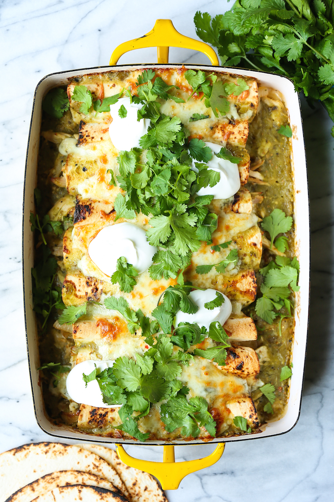

Green Chicken Enchiladas

Description:
Salsa verde, green chiles, leftover rotisserie chicken and Monterey Jack cheese make for the best weeknight enchiladas ever!
Ingredients:
- 1 tablespoon canola oil
- 1 medium sweet onion, diced
- 3 cloves garlic, minced
- 1 teaspoon dried oregano
- ½ teaspoon ground cumin
- 2 (4-ounce) cans diced green chiles
- 4 cups coarsely shredded rotisserie chicken
- 2 cups salsa verde, divided
- ½ cup chopped fresh cilantro leaves
- 3 cups shredded Monterey Jack cheese, divided
- Kosher salt and freshly ground black pepper, to taste
- 8 8-inch flour tortillas, warmed
- ¼ cup sour cream
Steps:
- Preheat oven to 375 degrees F. Lightly oil a 9 x 13 baking dish or coat with nonstick spray.
- Heat canola oil in a large skillet over medium heat. Add onion, and cook, stirring frequently, until translucent, about 2-3 minutes. Stir in garlic, oregano and cumin until fragrant, about 1 minute. Remove from heat; stir in green chiles.
- In a large bowl, combine green chile mixture, chicken, 1/3 cup salsa verde and cilantro. Stir in 1 1/2 cups cheese; season with salt and pepper, to taste.
- To assemble the enchiladas, lay tortilla on a flat surface and spoon 1/2-3/4 cups of the chicken mixture in the center. Roll the tortilla and place seam side down onto prepared baking dish. Repeat with remaining tortillas and chicken mixture. Top with remaining salsa verde and remaining 1 1/2 cups cheese.
- Place into oven and bake until bubbly, about 35-40 minutes.
- Serve immediately, topped with dollops of sour cream.